Shortest-path grocery shopping
What’s the shortest path thru the grocery store to get my items?
Justin Pearson
Apr 19, 2020
In[1]:=
Summary
Given an image of the store’s aisles, we mesh it and generate a graph from the mesh. Then we use various shortest-path algorithms on the graph to find the shortest tour that visits all the items.
We are careful to build a graph whose edge-weights equal the euclidean distance between adjacent vertices, so that that shortest-path is shortest with respect to actual space, not just “number of hops on the graph”.
In[3]:=

In[4]:=
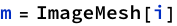

Triangularize the mesh. Pick a small “max cell size” to get small triangles.
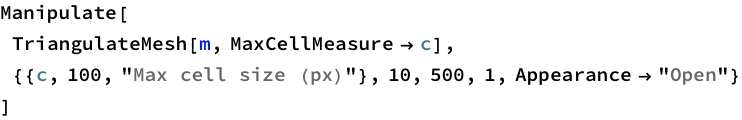


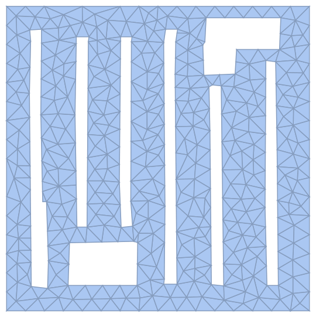
Convert the triangularized-mesh to a graph, using the degree-0 elements of the mesh -- the mesh points -- as vertices. (Degree-1 is the triangle edges, degree-2 is the triangles themselves.)
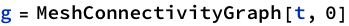

A slick UI for showing shortest-paths between any two vertices.
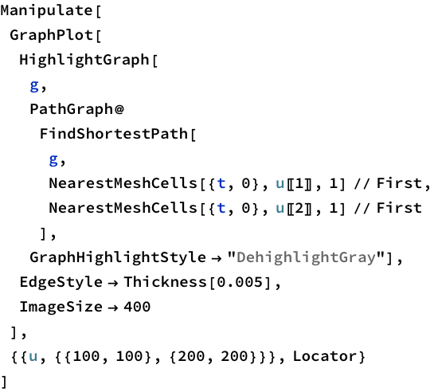

We extend this idea to build a shortest-path thru the store that visits all your items:


- This is a real map of my local Albertsons grocery store.
- The thin pink line is the shortest tour, ignoring occlusions like the (black) aisles.
- The colored paths visit the items in the order of the shortest tour.
- To find the shortest tour thru the items along the triangulated mesh, I first found the shortest pairwise distance between every pair of items on the triangulated-mesh graph. Then I made a new complete graph with only 40 vertices -- the items -- whose edge weights were the pairwise distances. Then I asked MMA to find the shortest tour of those 40 vertices. (It would have been simpler to ask MMA to find the shortest path on the triangulated-mesh graph from vertex 1 to vertex 40 that visits all 40 vertices, but I didn’t know how to do that.)
Build graph of the grocery store
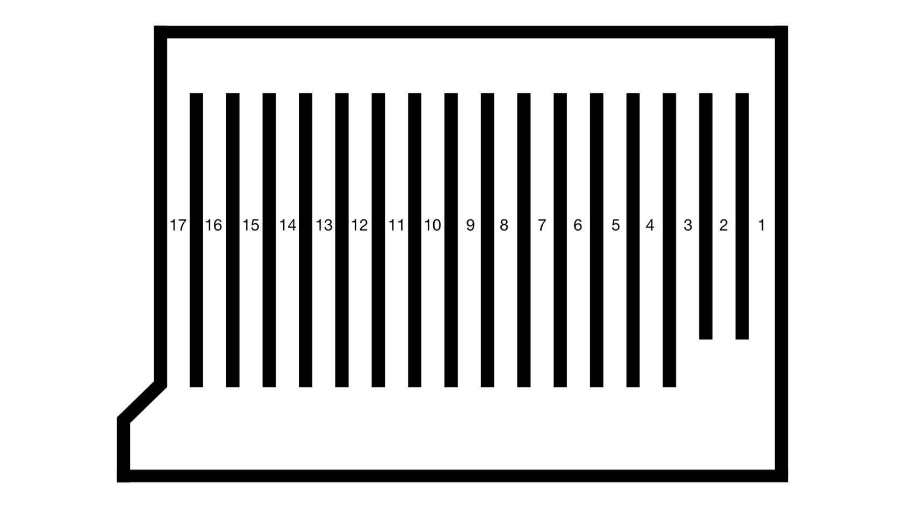
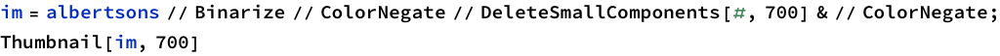


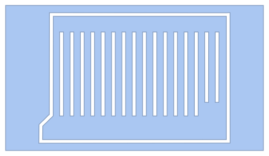


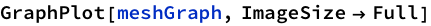

Get the graph vertices.
Notice that the vertices are not integers, but rather of the form {0,3}. Read this as “Point number 3”. (Because vertices correspond to points on the mesh, not lines or faces, and points are “degree 0”.)
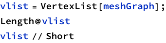
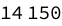


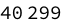

Here are the euclidean coordinates of each vertex.
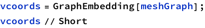

Map vertices to their coordinates.
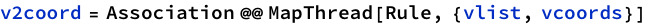

Build a new graph with the same vertices and edges, but whose edges are weighted by the euclidean distance between the vertices.


The weighted graph has edges that are weighted by the euclidean distance between the vertices.
This is important for distance-finding. Here are two adjacent vertices:

In the raw mesh graph, they are only a distance “1” apart:


In the weighted graph, their graph distance is the euclidean distance:

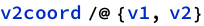
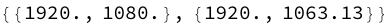

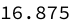
Shopping trip


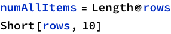
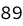
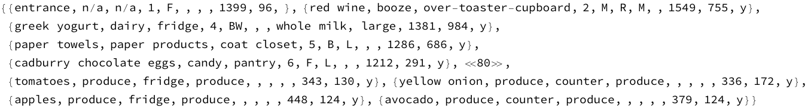


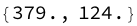


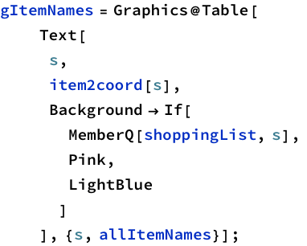


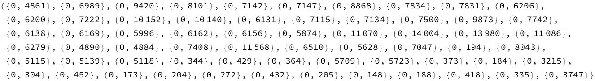
Example
Find a path from the first item (“entrance”)to the last item (“exit”):

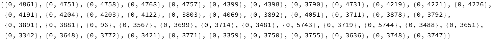

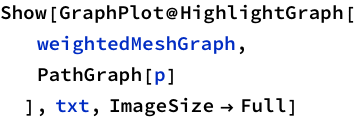

Find best order to visit the items
Idea: make a NEW graph, (a complete graph): vertices are the items, edges are weighted by shortest-dist from the mesh graph.
Then find a tour of this new graph, and map it back to the mesh graph.


Here’s the shortest path thru all the items:
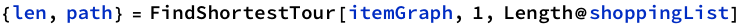

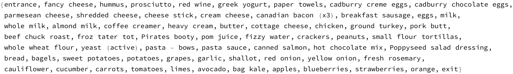
This should be the same distance as traversing associated vertices on the weighted mesh graph:
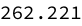


Here’s the shortest path thru the items, if you get to move through the walls:

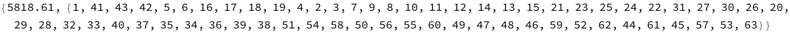
However, if you account for the boundaries, then visiting the items in that order is longer than the shortest path:

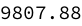
(The optimal one is less:)


Show the optimal path thru the items:


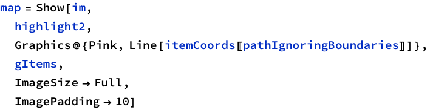

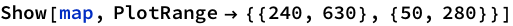
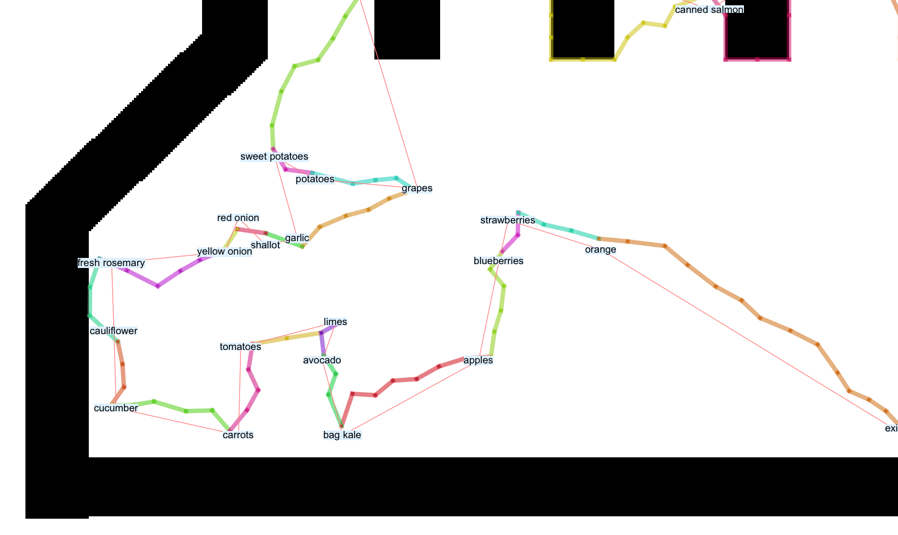